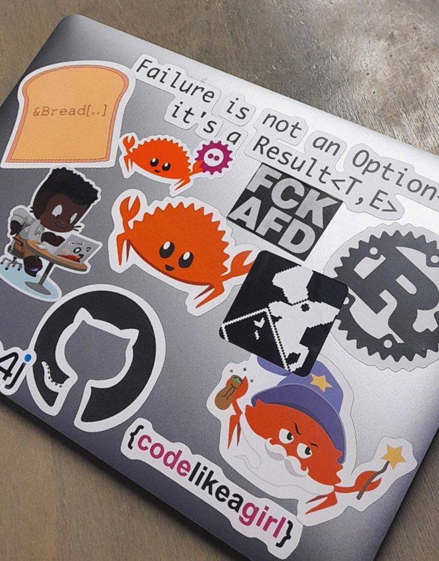
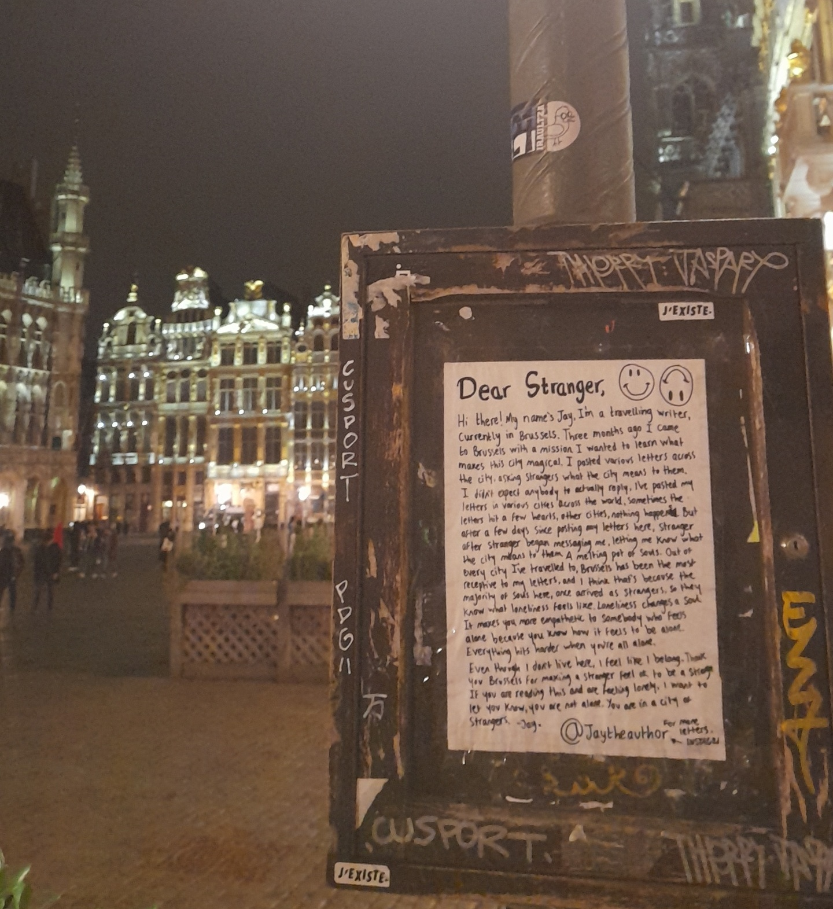

Sharing my experience after giving a talk at FOSDEM 2024!
The Venue 🏛️
FOSDEM takes place in Brussels, Belgium in the ULB Solbosch Campus. This was my second visit to Brussels (after EuroRust) so I was already familiar with the city. This time the weather was a bit rainy and gloomy so the vibes were not that uplifting from the start. But it was fine.
Also, this was my first FOSDEM! I remember hearing one of the following things about this event from the people I know:
- It is crowded! (good and bad thing!)
- Too many tracks/talks (good and bad thing!)
- Small rooms (bad thing! Someone even said you gotta fist fight for your seat lol)
And I experienced all of these at first hand and... it was awesome!
-
I met with a lot of people!
- Finally met some people that I know from the internet in person. (shoutout to Ellie Huxtable and Predrag Gruevski)
- Had the chance to hang out with fellow Rust developers such as Matthias Endler and Nikolai Vazquez
- Had a great time with people from Arch Linux (kpcyrd, Levente Polyak, David Runge)
-
Listened great talks about all kinds of topics.
- Also missed some great talks due to overlapping.
-
Camped in the GCC devroom for the whole day to not lose my seat.
- It was worth it.
My Talk 🐭
Watch my talk here: https://www.youtube.com/watch?v=NU0q6NOLJ20
I gave a talk about Ratatui - a Rust library that is all about cooking up terminal user interfaces.
At the end of the day, I had many positive feedback about my talk and it was an amazing feeling to see people getting excited about terminal user interfaces and Ratatui!
"Loving this presentation. You have given a really fun short walk through the history of tuis. Excited to see how developing with ratatui is like."
"I like all the animated pixel art rats :D"
Thanks to @mo8it@fosstodon.org for the picture!
I gave away Ratatui stickers to a bunch people and afterwards I spotted them on some laptops.
My good friend Daniel Pecos Martínez was also wearing this LED thingy during the conference and I think it was pretty cool!

I would like to thank to fellow Ratatui maintainers (shoutout to Dheepak Krishnamurthy!) and my friends such as Marco Ieni who gave me feedback to improve my talk during my practices.
Also, I want to personally thank the Rust devroom organizers (Ewan Higgs, Paul Horn, ...) for doing an excellent job. They really help with growing the community for Rust projects like Ratatui and many others. Kudos!
Talks 🎙️
I listened to a number of talks in Rust and GCC devroom, notably:
- SemVer in the Rust ecosystem: breakage, tooling, and edge cases
- The Four Horsemen of Bad Rust Code
- Can the mold linker be /usr/bin/ld?
- Sega Dreamcast Homebrew with GCC
This talk was especially interesting because apparently you can run Rust on Dreamcast 🤯
Food 🍲
The most important aspect: food!
- I attended the speaker dinner with the Rust devroom speakers & organizers and we discussed all kinds of things including floating islands.
- I had lunch with fellow Arch Linux maintainers and did some pentesting in the restaurant.
I also enjoyed drinking lots of Club Mate which became my favorite drink at this point. 🍺
Looking Forward ✨
I learned a lot of new things at FOSDEM 2024 and I'm really looking forward to FOSDEM 2025. It was definitely one of my most unique conference experiences ever.
Thanks to everyone who participated in it!
See you next year!
- orhun